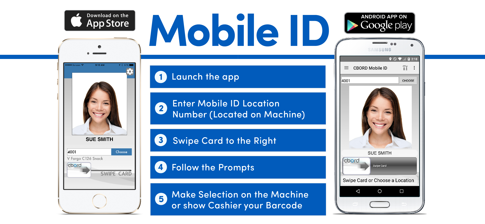
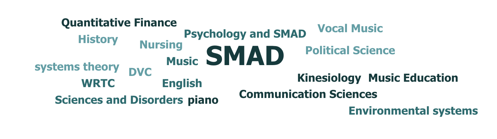
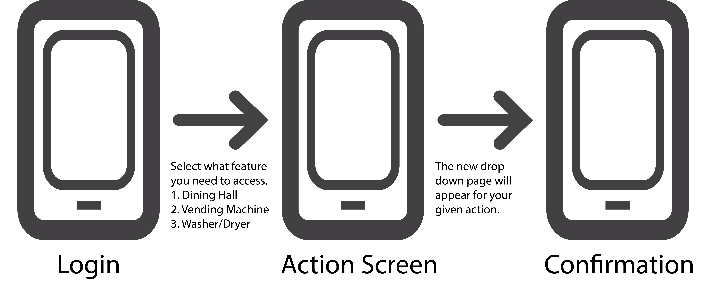
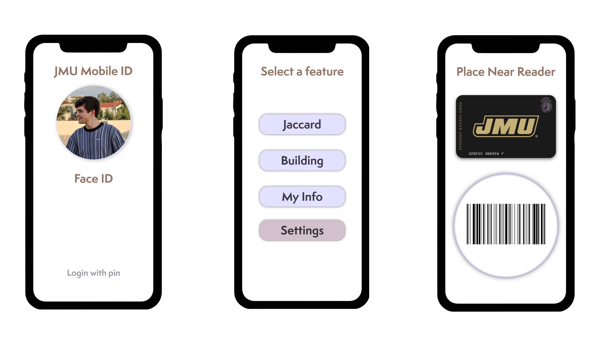

Mobile ID Redesign
By: Andrew Genese
The Challenge and Goal
James Madison University students have access to a mobile ID app that can be used in place of their Jaccards(access card). The app has the bones to be great. The app features the ability to unlock doors, scan into the dining halls, and check your accounts. However, a combination of mechanical, technical, and aesthetic issues makes for a poor user experience. I, personally, have no motivation to use the app due to these issues. As I began research on the app I quickly discovered I wasn't the only student who experienced frustrations. The goal of my redesign is to create a reliable, easy to use, and aesthetic app to help JMU students.

Below is a current wire frame of the application.

Below is a refined and revamped wireframe of the application.

Empathize and Ideate
To start this process I began user research to help identify where pain points and what users enjoyed were. I also created a wireframe to help identify the layout of the app. The app is usable but clunky and at times so frustrating that it completely put people off from using it. My survey collected twenty-seven responses from fifteen different majors, five levels of schooling(freshman-graduate), and ages nineteen to twenty-two plus.

Pain Points and Responses
- Outdated Navigation
- Location Feature is spotty
- Inconsistent reactions and locations
"One user went on to write, "[The] Layout mostly makes sense but is brought down by confusing terminology, abbreviations, codes etc."
"The app is very buggy, some of the interfaces do not work how they are supposed to."
"It's spotty. I try to use it for laundry and dining halls but it never can sense where I am."
"It does what it needs to, can be a bit frustrating when it doesn’t load properly or the QR code does scan, but I like being able to check on my balances and have them update so quickly. Could also be cool if you didn’t need to always pick your location to “swipe card” because sometimes it can be confusing to figure out which vending machine you’re at"
The Old Layout
Aside from obvious aesthetic issues the app has an unclear path once opened. Once you find out which page you're on, there aren't any labels other than the incredibly small bottom bar nav.
When considering the complaints and suggestions a few patterns emerged. Students are frustrated with the layout, Jaccard's use, and responsiveness of the application. These are just a few of the responses given in regards to the pain points. The next step was identifying a clear problem and pursuing it.
User Flow
I created a three step user flow to visual the new short process for using the app.

New Interface, New Layout, and New Features
The Redesign
A lot of respondents asked or suggested the app feature a chip-style reading feature and a revamped barcode system. Moving forward I decided to combine the two into a two-step process.After you've logged in using the new face ID/pin system, you will select what you're using the app for. Dining halls, washing machines, vending machines, or building doors. I created a system where you will select the icon pertaining to your desired use. For the sake of this case study, I furthered this to using the Jaccard at dining halls. Once you select your Jaccard. A new screen will overlay with a digital copy of your card with a barcode ready immediately as well as a relay to your smartwatch. 
Reflections
When I started this project I really thought this would be a replacement for Jaccard's but quickly learned through my user research that people just wanted something to work in hand with their Jaccard's. I discovered that students liked the design of Apple Pay's mobile reader but also liked the barcode system even though it was spotty most of the time. The new I have created is aimed to make students' lives easier and provide a system that is seamless and easy to use. So much so that they actually enjoy using it.